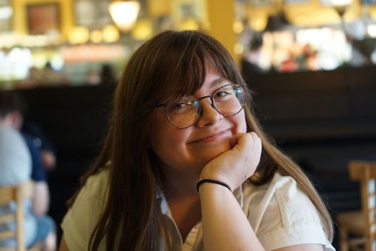

About Me
Hey, I'm Maggie! I'm an aspiring web developer based out of Indiana. I've mostly worked in customer/food service throughout my career and felt like my attention to detail could be better put to use by building websites. Hopefully, you feel the same way after peeking at a few of my projects!